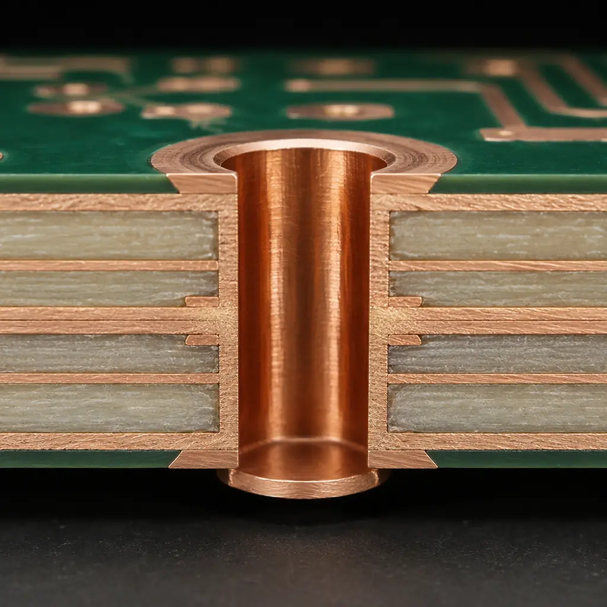
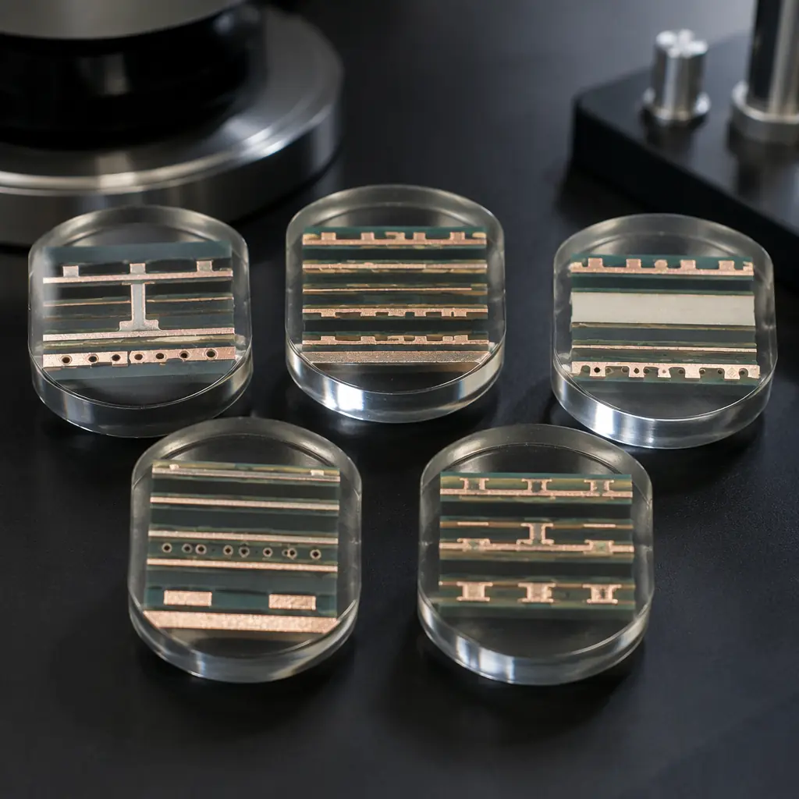
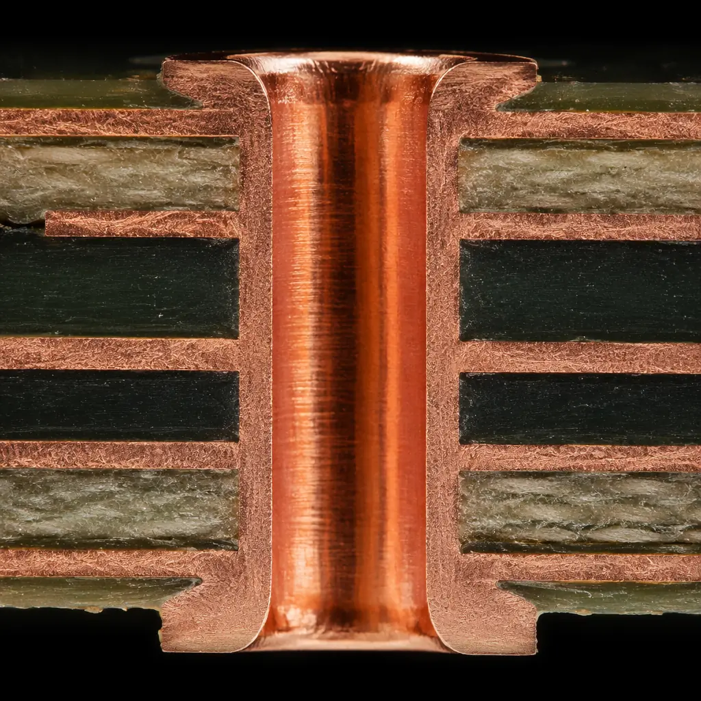
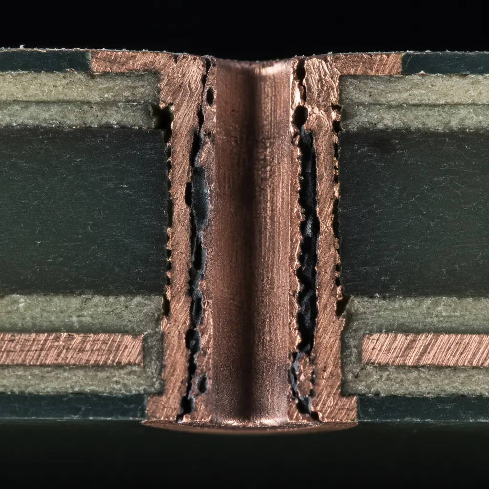

When you receive a PCB shipment, visual inspection tells you surface-level quality — solder mask alignment, silkscreen legibility, pad cleanliness. But the structures that determine long-term reliability are buried inside the board, invisible to any camera or AOI system. The only way to see them is destructive: cutting a cross-section, mounting it in epoxy, polishing it to a mirror finish, and examining it under a metallographic microscope. This is the cross-section report — and if you are buying PCBs from overseas, it is the single most powerful quality verification tool you have.
A cross-section report reveals what no other QC method can: the actual copper thickness inside every via, the uniformity of plating, the integrity of inner-layer bonds, and the quality of the intermetallic compound (IMC) layer at every solder joint. At Huaxing PCBA, we perform cross-section analysis as part of our standard quality control for 100% of production lots requiring IPC Class 2 or Class 3 certification, using calibrated metallographic microscopes with digital measurement systems capable of resolving features down to 0.1 µm. If your supplier sends you a microsection report, you need to know what you are looking at — because a report that looks professional can still mask serious quality problems.

What a Cross-Section Report Tells You (That Other QC Reports Don't)
Most PCB quality reports focus on what can be measured non-destructively: electrical continuity, impedance values, dimensional accuracy, and visual appearance under AOI. These are necessary but insufficient. A board can pass flying-probe test with perfect electrical continuity and still fail in the field within months — because the copper inside a via was too thin, or a micro-void was waiting to become a crack under thermal cycling.
Cross-section analysis is the gold standard for internal quality verification precisely because it is destructive and direct. Instead of inferring internal quality from surface measurements, you physically cut the board open and look. Here is what a well-executed cross-section report gives you that other QC methods cannot:
Actual Plating Thickness (Not Design-Nominal)
Your Gerber file specifies a finished hole size and copper weight, but the actual plated thickness inside a via depends on bath chemistry, current density distribution, and aspect ratio effects. A cross-section lets you measure the copper barrel wall directly at multiple points along the hole — typically top, middle, and bottom. IPC-A-600 specifies minimum average plating thickness of 20 µm for Class 2 and 25 µm for Class 3. If your supplier's process drifts below these thresholds, only a cross-section catches it. See our IPC Class 2 vs Class 3 comparison for the full acceptance criteria breakdown.
Inner-Layer Registration Accuracy
In a multilayer board, each inner layer must align precisely with every other layer. Misregistration of even 50 µm can cause annular ring breakout — where the drilled hole misses the inner-layer pad, reducing or eliminating the electrical connection. Cross-section images show the relationship between the drilled hole and every inner-layer pad in a single field of view, making misregistration instantly visible. This is particularly critical for HDI and high-layer-count boards where annular ring margins are tight by design.
IMC Layer Thickness at Solder Joints
When solder wets a copper pad, an intermetallic compound layer forms at the interface — primarily Cu6Sn5 and Cu3Sn. This IMC is essential for a strong bond, but the thickness matters enormously. Too thin (<0.5 µm) means insufficient wetting and a mechanically weak joint. Too thick (>4 µm) means the joint has become brittle and will crack under thermal stress. Cross-section microscopy at 500× to 1000× magnification lets you measure the IMC layer directly — information no electrical test can provide.
Dielectric Integrity Between Layers
The FR-4 or high-speed laminate between copper layers is supposed to be a solid, continuous insulator. Cross-sections reveal whether delamination, resin-starved areas, or glass-fiber protrusion has compromised that insulation. These defects are invisible from the outside and cannot be detected by flying-probe or ICT — but they create paths for conductive anodic filament (CAF) growth that leads to field failures months later. Our PCB failure analysis guide covers CAF mechanisms in detail.
Key Takeaway: A cross-section report is the only QC document that directly measures internal copper quality, registration accuracy, IMC integrity, and dielectric condition. If your supplier does not provide cross-section reports — or provides them without actual micrograph images and measurements — you are flying blind on internal quality.
The 5 Critical Structures Every Cross-Section Examines
When you open a cross-section report, the images will show polished PCB slices at magnifications ranging from 50× (overview) to 1000× (detail). A competent report systematically examines five structures. Knowing what each one should look like turns you from a passive report recipient into an informed quality gatekeeper.

PTH Copper Plating Thickness & Uniformity
This is the most common measurement. Under the microscope, the plated through-hole barrel appears as a bright copper ring. A good PTH shows uniform thickness from top to bottom with no thinning at the knee (where the barrel meets the surface pad). The minimum average copper thickness must meet IPC-A-600 requirements: 20 µm (Class 2) or 25 µm (Class 3), with no single measurement point below 18 µm or 20 µm respectively. Aspect ratio matters — vias deeper than 8:1 (hole depth ÷ diameter) are harder to plate uniformly, and cross-sections of these should be scrutinized most carefully.
Via Fill Quality (for Filled & Capped Vias)
HDI boards and high-reliability designs often use filled and capped vias — where the hole is plugged with conductive or non-conductive epoxy and then plated over. Cross-section examination reveals whether the fill material is void-free and fully cured, whether it has adhered to the hole wall, and whether the cap plating is continuous and properly bonded. Even small voids in via fill act as moisture traps and stress concentrators during reflow — our microsection analysis guide shows examples of both good and defective via fill cross-sections.
Inner-Layer Registration (Annular Ring)
For each drilled hole that connects to an inner-layer pad, the cross-section should show the hole centered on the pad with adequate annular ring remaining on both sides. IPC-A-600 Class 2 allows 90° breakout (the hole edge can touch the pad edge, but the connection must still exist), while Class 3 requires a minimum 50 µm annular ring with no breakout permitted. Cross-sections through vias in different board regions (center vs. edge) reveal whether registration drift is uniform or localized — the latter suggesting a lamination or drilling setup problem.
Solder Joint IMC Layer
At high magnification (500×–1000×), the intermetallic compound layer appears as a thin, continuous band between the solder and the copper pad. A healthy IMC is 1–3 µm thick, uniform, and scallop-shaped (for Sn-based solders). If the IMC is too thin, the joint may not have formed properly — suspect insufficient reflow time or temperature. If it is too thick (especially if dominated by Cu3Sn rather than Cu6Sn5), the joint has been over-aged and is brittle. This is a common issue with boards that have undergone multiple reflow cycles.
Dielectric Thickness Between Layers
The insulating material between copper layers must meet the minimum thickness specified in the stackup. Cross-section measurement verifies this directly. This is particularly important for controlled-impedance designs, where dielectric thickness directly affects the impedance value. A deviation of more than ±10% from the designed prepreg/core thickness can shift impedance outside the specified tolerance. Our incoming quality inspection guide includes a checklist for verifying stackup conformance from cross-section data.
How to Spot Red Flags in Microsection Images
Even if you are not a trained metallurgist, certain defects in cross-section images are visually obvious once you know what to look for. Here are the six most common red flags — and what each one means for board reliability.

Voids in Copper Plating
Voids appear as dark spots or gaps inside the copper barrel wall. Small isolated voids (<10% of the wall cross-section) may be acceptable under Class 2, but any void that spans more than 25% of the copper thickness is a reject per IPC-A-600 for Class 3. Clusters of small voids are equally concerning — they indicate poor plating bath chemistry or contamination. When you see voids, ask whether the report includes measurements of void size relative to wall thickness, not just the presence/absence of voids.
Cracks or Knee Fractures at Via Base
The transition where the plated barrel meets the surface pad (the "knee") is the highest-stress point in a PTH. Under thermal cycling, the CTE mismatch between copper (~17 ppm/°C) and FR-4 (~14 ppm/°C in Z-axis) concentrates stress here. Cracks visible in the cross-section at this location — even hairline cracks — indicate that the barrel is on the path to fatigue failure. For high-reliability applications, any visible crack at the knee is cause for lot rejection, regardless of Class designation.
Inner-Layer Separation (Delamination)
Delamination appears as a dark gap or line between a copper foil and the adjacent dielectric layer — or between prepreg layers within the dielectric itself. It is unmistakable under the microscope: instead of a clean, continuous interface, you see a physical separation. Causes include insufficient lamination pressure or temperature, contaminated copper surfaces before lamination, or moisture trapped in the prepreg. Delamination is a zero-tolerance defect for all IPC classes — even a small separation is grounds for lot rejection and should trigger a full failure analysis investigation.
IMC Too Thick or Too Thin
Under 1000× magnification, the IMC layer should be visible but not dominant. If the IMC appears as a thick, dark band that occupies more than 25% of the total joint thickness, the joint is over-aged — expect brittle fracture under mechanical stress. If you cannot see a distinct IMC layer at all (or it is thinner than 0.5 µm), the solder never properly wet the copper — this is a cold joint that may be electrically connected but mechanically unsound. Both conditions are reliability risks that electrical test alone cannot detect.

Resin Recession
Resin recession appears as a withdrawal of the dielectric material away from the copper plating inside the hole — you will see a dark gap between the copper barrel and the surrounding laminate. This is typically caused by aggressive desmear or etchback processes that remove too much resin. Resin recession creates a stress concentration point and a potential path for plating solution entrapment, which leads to corrosion over time. IPC-A-600 limits resin recession to 80 µm maximum depth for Class 2 and 50 µm for Class 3.
Wicking
Wicking is the absorption of plating solution or moisture along the glass fibers that protrude from the drilled hole wall. Under the microscope, it appears as dark, finger-like projections extending outward from the copper barrel into the dielectric — following the glass weave pattern. Wicking exceeding 100 µm (Class 2) or 80 µm (Class 3) is a reject because it creates conductive paths between adjacent vias or layers, eventually leading to CAF failure. This defect is particularly common in boards with high glass-transition-temperature (Tg) materials processed at aggressive drill parameters.
Procurement Tip: Never accept a cross-section report that shows only "good" images. A credible supplier's report will include at least one "worst-case" coupon — the thinnest plating, the deepest resin recession, the most marginal annular ring — with measurements demonstrating that even the worst case meets your acceptance criteria. Reports showing only pristine images suggest selective sampling, which is itself a red flag worth investigating in your next supplier audit.
IPC-A-600 Acceptance Criteria for Cross-Sections
IPC-A-600 (Acceptability of Printed Boards) is the industry-standard reference for interpreting cross-section images. It defines what is acceptable for Class 1 (general electronic products), Class 2 (dedicated service), and Class 3 (high reliability). For most B2B PCB buyers, the relevant comparison is Class 2 vs. Class 3. Here is what the standard says about the key cross-section measurements:
| Parameter | Class 2 (Dedicated Service) | Class 3 (High Reliability) |
|---|---|---|
| Minimum avg. copper in PTH | 20 µm | 25 µm |
| Minimum copper at any point | 18 µm | 20 µm |
| Wrap plating (surface to knee) | Not required | Required, 25 µm min |
| Annular ring (internal layers) | 90° breakout permitted | 50 µm min, no breakout |
| Voids in copper (max size) | Not specified (by agreement) | <25% of wall thickness |
| Resin recession (max depth) | 80 µm | 50 µm |
| Wicking (max length) | 100 µm | 80 µm |
| IMC layer thickness | Continuous & uniform | 1–3 µm, scallop-shaped |
The critical difference between Class 2 and Class 3 is wrap plating. Class 3 requires that the copper plating extends continuously from the hole barrel onto the surface of the external pad — this wrap provides mechanical anchoring that prevents barrel cracking under thermal stress. Class 2 does not mandate wrap plating, which means a Class 2 board can have the copper barrel terminate at the knee (the junction of the hole wall and the internal surface of the pad) with no extension onto the external pad surface. If your application involves thermal cycling, vibration, or long service life, specifying Class 3 with wrap plating verification in the cross-section report is essential — and our IPC Class 2 vs Class 3 guide covers every difference that matters for procurement decisions.
When reviewing a cross-section report against IPC-A-600, pay attention to what the report does not include. A complete report should state: (1) the IPC class being verified, (2) the magnification used for each measurement, (3) the specific IPC-A-600 paragraph(s) referenced for each accept/reject decision, and (4) whether the measurements are from production coupons or from the actual production board. Coupon-based measurements are standard practice, but the coupon must be from the same production panel as your boards — not a generic test coupon from a different run. This is a detail you should verify during supplier audits.
What to Ask Your PCB Supplier About Their Cross-Section Process
Not all cross-section reports are created equal. The quality and credibility of a report depend heavily on the supplier's sampling methodology, microscope calibration, and reporting discipline. Before you rely on a supplier's cross-section data for acceptance decisions, ask these five questions:
What Is Your Sampling Frequency?
Cross-section analysis is destructive — you cannot test every board. The industry norm is one coupon per panel, with one panel sampled per production lot. For high-reliability lots (aerospace, medical, automotive), ask for one coupon from the first panel and one from the last panel of the run — this captures any process drift during the production batch. If your supplier samples only one coupon per lot from a single panel, you have no visibility into variation within the lot. For reference, Huaxing PCBA's standard sampling for Class 3 lots follows IPC-6012 frequency tables, with additional coupons taken from panel edges where plating uniformity is hardest to maintain.
Where Are the Coupons Located on the Panel?
Plating thickness and registration accuracy vary across a production panel — edges typically see different current density than the center during electroplating, and thermal gradients during lamination affect registration differently at corners vs. center. A credible cross-section report identifies the coupon location (e.g., "Panel A, position C-3, left edge"). If the report does not specify coupon location, assume the supplier sampled from the most favorable position — and ask for edge-position coupons on your next order. This is one of the most common shortcuts we uncover during on-site supplier assessments.
What Magnification and Calibration Standard Are You Using?
Copper thickness measurements at 200× and 500× can differ by several microns due to edge detection differences at different magnifications. A professional lab uses a calibrated stage micrometer to verify the microscope's measurement scale before each session, and the report should state the calibration standard (e.g., "NIST-traceable stage micrometer, calibrated 2026-06-15"). For IMC layer measurements, magnification below 500× is insufficient — the IMC band is too thin for accurate measurement at lower magnification.
Do You Include Micrograph Images With Scale Bars?
A report that lists copper thickness numbers without the corresponding micrograph images is essentially unverifiable. Every measurement should be accompanied by a labeled micrograph showing exactly where the measurement was taken, with a visible scale bar. Without this, you cannot verify whether the measurement was taken at the thinnest point of the copper barrel (as IPC-A-600 requires) or at a conveniently thicker location. For your pre-shipment inspection, insist on image-supported measurements — not just a table of numbers.
What Does a Complete Report Include?
A credible cross-section report should contain, at minimum: micrograph images with scale bars for every measurement; a summary table comparing measured values to the specified IPC class limits; identification of the specific production lot, panel, and coupon location; the microscope model and calibration date; the name of the technician who performed the analysis; and an explicit accept/reject statement for each measured parameter. If your supplier's report is missing any of these elements, treat it as a starting point for discussion — not as a final quality certificate. Our incoming inspection guide provides a complete checklist for evaluating third-party QC documentation.
Factory Reality: A supplier that is transparent about its cross-section process — sharing coupon locations, calibration records, and worst-case images — is demonstrating the quality culture you want in a long-term manufacturing partner. The suppliers who push back on these questions or provide only summary numbers without supporting images are the ones whose cross-section reports you should verify independently.
Summary: Using Cross-Section Reports to Make Better Buying Decisions
Cross-section analysis is not an academic exercise — it is a practical tool that directly affects whether the boards you buy will survive soldering, thermal cycling, and years of field operation. The key insight is this: electrical test confirms what is connected; cross-section analysis confirms what will stay connected.
The three most important things to take away from any cross-section report are: (1) copper plating thickness and uniformity in the PTH barrel — this is your primary defense against barrel fatigue; (2) the condition of the IMC layer at solder joints — this determines mechanical strength through every thermal cycle; and (3) the absence of delamination, resin recession, and wicking — these are the early warning signs of insulation failure that electrical test cannot see until it is too late.
At Huaxing PCBA, we include cross-section analysis as a standard deliverable for all IPC Class 2 and Class 3 production orders, with images, scale bars, and IPC-A-600 compliance statements for every measured parameter. Our metallographic laboratory maintains NIST-traceable calibration, and our quality team performs cross-section verification on every production lot — not just first-article samples. Learn more about our quality systems or contact our engineering team to discuss cross-section requirements for your next PCB order.